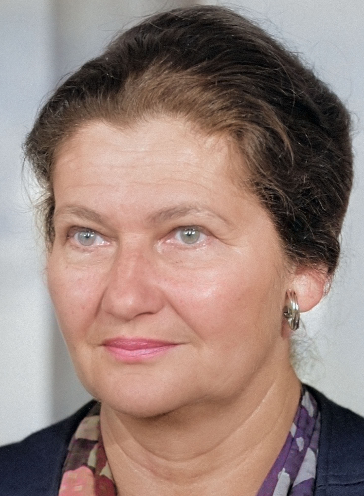

Holocaust Encyclopedia
uncensored and unconstrained
Veil, Simone

Simone Jacob, whose last name changed to Veil after marrying, was a young Jewish woman from France who was deported to Auschwitz in April 1944. When Polish historian Danuta Czech wrote the first edition of her Auschwitz Chronicle, she reported that not a single woman of the transport with which Ms. Jacob arrived at Auschwitz had been registered there. Hence, Mrs. Czech jumped to the unproven conclusion that all these women had been gassed. Hence, Ms. Jacob had been gassed on arrival as well.
In 1979, Simone Veil, née Jacob, became the first president of the newly created European Parliament.
In the second edition of her Auschwitz Chronicle of 1989/1990, Danuta Czech corrected this and other similar errors. She had now found 223 women from that transport who had been registered after all. Unable to learn from past mistakes, she declared that those about whose fate she had no information were killed in the gas chambers
— with not a shred of evidence to back this up.
When the writings of French Holocaust skeptic Dr. Robert Faurisson attracted a lot of public attention in the early 1980s in France, Mrs. Veil stated the following regarding the skeptics’ claim on the lack of credible evidence for the existence of homicidal gas chambers at Auschwitz:
Everyone knows that the Nazis destroyed these gas chambers and systematically eradicated all the witnesses.
This statement is false for two reasons: First, because some claimed homicidal gas chambers have survived. Second, many witnesses who claimed to have seen homicidal gas chambers survived and testified during and after the war. This is demonstrated by the long yet still-incomplete list of witnesses in the present work. However, an analysis of these accounts also reveals their unprecedented unreliability.
Simone Veil’s statement is moreover a logical fallacy. If a claim cannot be demonstrated to be true because of a lack of evidence, then the claim is simply not true. Claiming that all evidence was destroyed in turn requires evidence that this claim is true. Hence, Mrs. Veil tried to rescue her primary thesis — homicidal gas chambers existed — by supporting it with an auxiliary hypothesis — all evidence was destroyed. This auxiliary hypothesis immunizes the primary thesis from any attempt at refuting it, and is thus impermissible. If such an argument were allowed, then any claim, no matter how insane, would have to be true, if accompanied by claims that all evidence for its veracity has been destroyed.
(For more information, see Rudolf 2019, pp. 130-131, 181f., fn 36.)